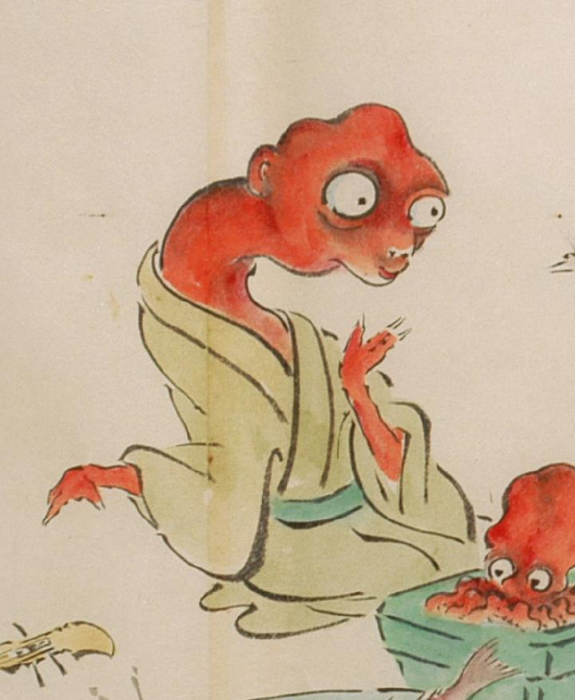

肌が赤く首が長い化物。薄緑色の着物に緑色の帯を締めている。肌は赤く、頭は禿げて歪んでいる。大きな目玉は飛出て、鼻は低く、口が小さい。首は太く長い。手は3本指で鋭い爪が生えている。蛸を思わせる姿である。
出典：親書誌：U426_nichibunken_0053：化物婚礼絵巻；バケモノコンレイエマキ／日付：2006／資源識別子：U426_nichibunken_0053_0021_0004
Copyright (c)2010- International Research Center for Japanese Studies, Kyoto, Japan. All rights reserved.